マインクラフトの影MODって、下手な外部レンダリングより綺麗ですよね。
TwitterではChunkyやblender等の外部のソフトで撮影したスクショが良く伸びています。もちろんこれらはバニラのスクショより綺麗です。でも、影MODの方が綺麗ではないですか？
と思ったので、今回はblenderで影MODを超えることを目標に試行錯誤してみました。 今回、背景にうっすらと反射する床を作っていますが、マイクラ風の背景を作りたい方は地面ごとエクスポートしてください。
作品を3Dデータにして読み込み（前準備）
まず、マインクラフトのワールドデータから作品を3Dに変換しなければいけませんね。変換に使えるソフトはMinewaysかJmc2objがありますが、今回はMinewaysを使用します。ダウンロードしておいてください。
https://github.com/erich666/Mineways/releases起動したら、File > Open World > Find Your World の順にクリック、するとファイルダイアログが出るので、ワールドデータのフォルダを探します。 ここからが忘れやすいのですが、ワールドデータのフォルダが見つかったら、その中の level.dat を開きます。これが最初に読み込まれるファイルになります。
ワールドデータが見つからない方は、C:/ユーザー/PCの名前/AppData/Roaming/.minecraftの順にクリックしてみてください。 このうちAppDataは一度エクスプローラーを起動して"表示"タブの中の隠しファイルにチェックを入れていないと見えませんので注意。
ワールドが読み込まれたら、右クリックでドラッグして範囲選択してからDepthのスライダーを動かして地面が入らないようにします。
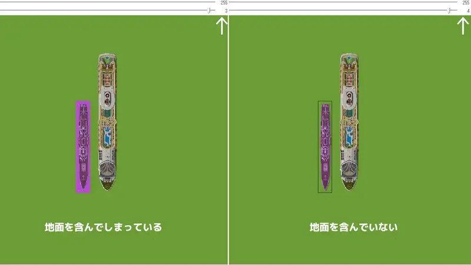{kind=link}
範囲選択が終わったら、File > Export for Rendering をクリックします。するとまたファイルダイアログが開くので、まず作品名のフォルダを作ってから、その中にまた作品名を入れて保存をクリックします。 （objファイル以外にもいろいろ生成されるからです）（拡張子は自動で付くので入力しなくていいです）
すると何やら設定画面が表示されますが、気にせずOKをクリックします。（別の記事で設定項目の解説をします）
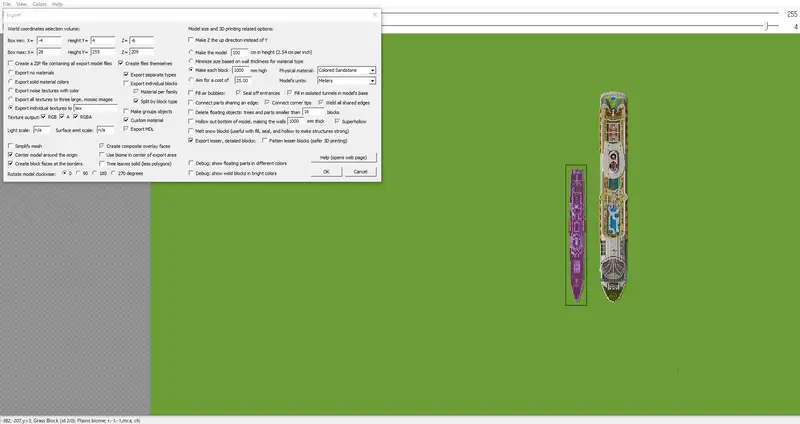{kind=link}
blender
ワールドの設定
blenderを起動すると、やはりいつもの立方体があるのでXキーで消しておきます。まず床を作りたいので、すかさずshift+aでMeshを選び、Plane（板）を追加します。左下に現れたメニューをクリックして、サイズを1000にします。
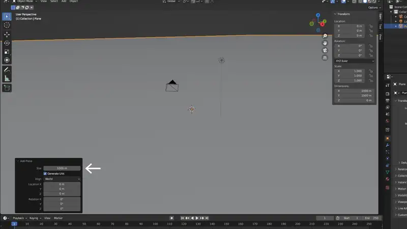{kind=link}
次に、画面右上の球体が四つ並んでいるところの右端をクリックしてレンダービューにします。背景が真っ暗なので、画面右のピンクの地球儀マーク（ワールドプロパティ）のカラーをグレーくらいに上げておきます。
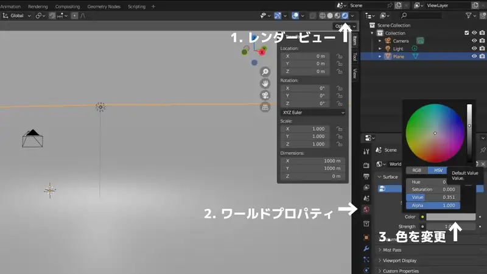{kind=link}
作品のインポート
File > Import > Wavefront (.obj) の順にクリックし、先ほど変換したデータの obj ファイルを開きます。しばらく待ち、ズームアウトすると作品がインポートされています。（マテリアル情報は一歩遅れて適用されます。
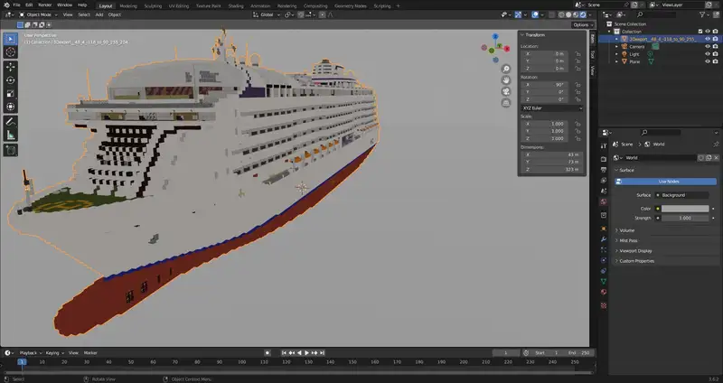{kind=link}
あれ？ノッペリしてるぞ！？
光源の設定
Eevee は光源が無いと影が落ちません。ということで、最初から設置されていたLightオブジェクトを作品の少し上に移動させ、設定を変更します。 右上のオブジェクト一覧（アウトライナー）からLightを選択し、3Dビューポート上で G > Z の順にキーを押下し、マウスを上下に移動させると光源が動きます。
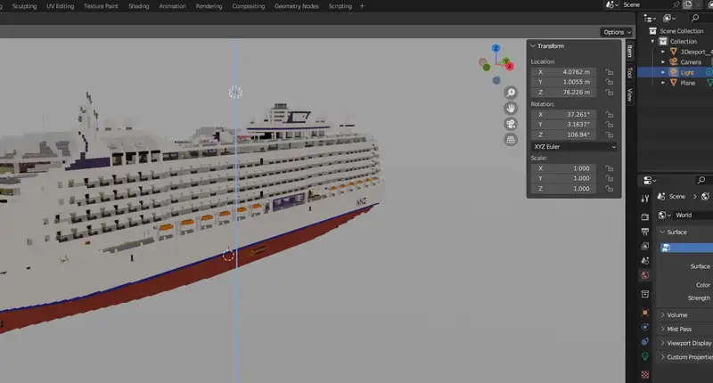{kind=link}
続いて光源の設定をします。画面右の緑の電球マークをクリックし、Lightの中の光源の種類をSunに、強さを10程度に、そしてその下のShadowにチェックを入れ、一番下のDistributionを0にします。 Distributionの数値を大きくすると、遠くに落ちている影が簡略化されます。 また、3Dビューポート上の光源から出ている線の先にある黄色い点をドラッグすることで光の向きを変えられます。（Sunの場合、光源そのものの位置を変えても変化はありません。）
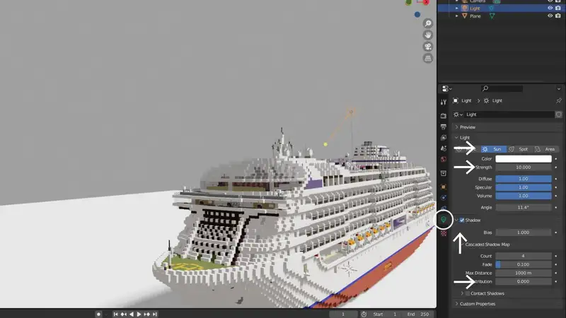{kind=link}
レンダリングの設定
レンダープロパティの設定です。画面右のアイコンが縦に並んでいるところの上の方にあるカメラのようなアイコンをクリックします。 Ambient Occlusion (AO) にチェックを入れ、距離を10m、Factor（係数）を2から4程度に、Bounces Approximationのチェックを外します。 （AOとは濃い目の隙間影を追加する処理です）さらに下の方の項目に移動し、ShadowsのCascade Sizeを4096pxに、Soft Shadowsのチェックを外します。床に反射させたい場合はScreen Space Reflectionsにチェックを入れます。
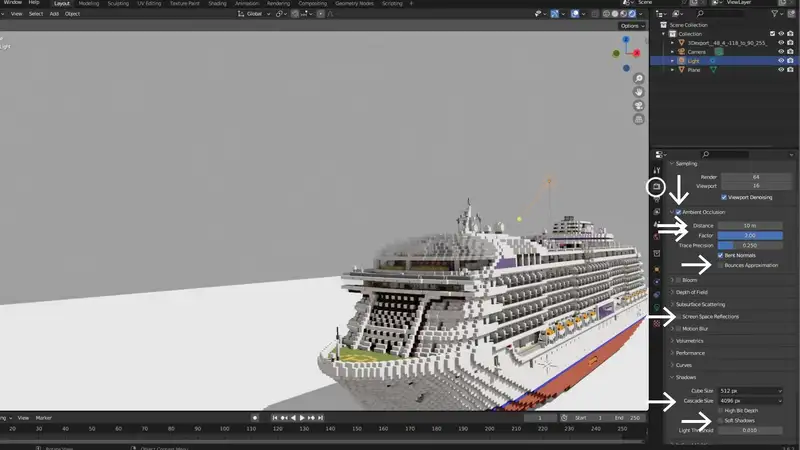{kind=link}
床の設定
トップ画像のように、床を反射させてみます。Planeを選択し、画面右のピンクのチェッカーフラッグ柄の球体のアイコンをクリックすると、+Newの横にも同じアイコンがあるのでクリックします。 検索窓を使い、"Material"を探し、クリックします。
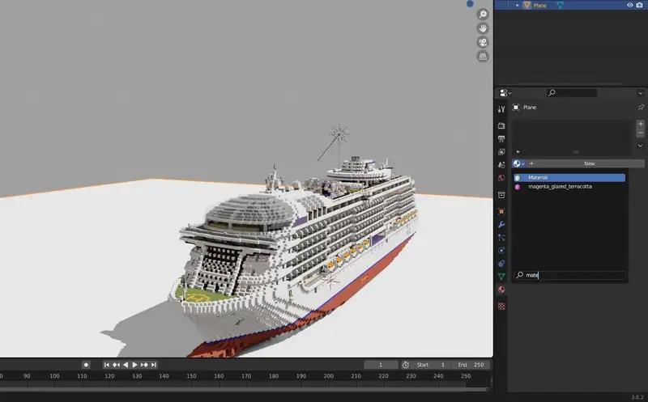{kind=link}
すると設定項目が沢山現れるので、Base Color の白い部分をクリックして背景と同じくらいのグレーに、下の方に行ってRoughness（粗さ）を0にします。 この時点でかなり反射したと思いますが、最後にMetallicの数値を上げて行き、反射の度合いを調節します。
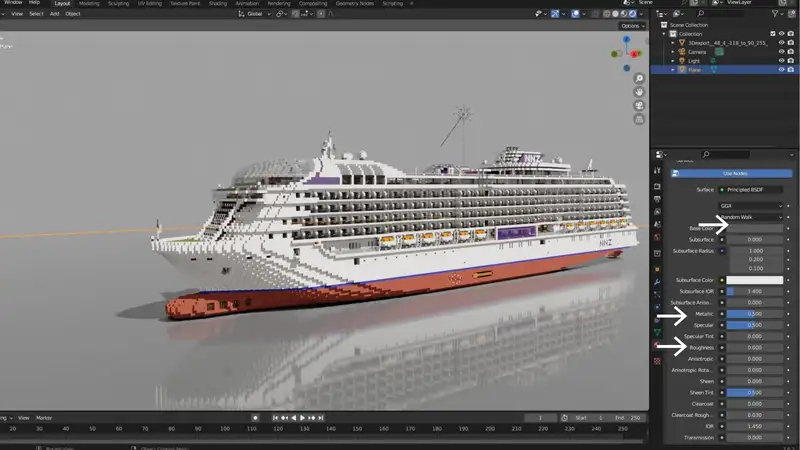{kind=link}
こんな感じになったでしょうか。なっていなければ何かを忘れています。一からやり直した方が早いかも。
カメラの設定
カメラを選択した後、Gキーを押して好きな位置に移動させます。画面右上の方にあるカメラアイコンをクリックするとカメラからの視点で操作できます。 画面上でNキーを押してサイドバーを表示させ、Location Rotation の数値をマウスでドラッグして動かしたり、サイドバーのViewタブに移動して View Lock の Camera to View にチェックを入れると視点操作とカメラの動きが連動します。
画面右の緑のカメラアイコンをクリックして、Viewport Display項目のSizeを10くらいにするとカメラが大きく表示されます。（レンダリング結果には影響しません。） また、作品が大きいとレンダリング範囲から出てしまうので、Lens項目の中のClip Start / End のEndに0をひとつ追加しておきます。
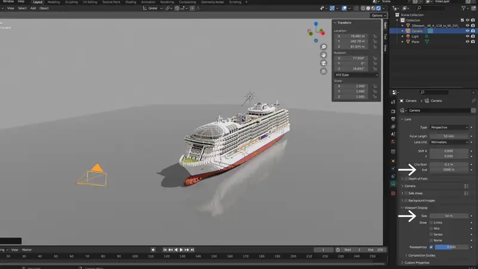{kind=link}
カメラの画角を変えるにはFocal Length（焦点距離）を変えるのですが、あまり広角にするとかっこ悪いので無難な50mmがおすすめです。
ようやくレンダリング
カメラの位置が決まったら、画面上でF12キーを押してレンダリングします。
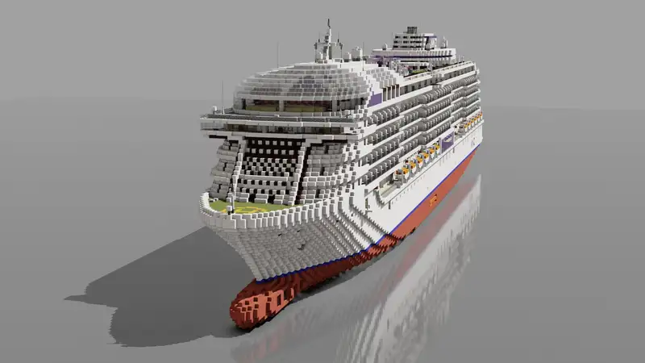{kind=link}
以上です。
何？船底が反射していないって？そんなに反射させたければCyclesを使いましょう。
発展
海での撮影方法です。こちらでは今回の解説に加えて、環境テクスチャで空を作ったり、霧を立ち込めさせたりしています。もちろん、海の作り方も解説しています。
https://nakamurazosen.blogspot.com/2023/09/blog-post_26.htmlMinewaysの設定項目の解説記事はその内書きます。